On light
On light
On darkFaithful reconstruction of the approved page-2 brand guide screenshot.
On light
On dark| Symbol ink | 124 x 136 px |
| Wordmark ink | 285 x 52 px |
| Internal gap | 23 px |
| Symbol height ratio | 2.615 : 1 |
| Viewbox | 440 x 145 |
Two roof beams meet at centre seam. Short dark pillar detached below; no overlap. Do not extend it or scale the symbol independently.
Charcoal #1F1F1F, Slate #3A3A3A, Graphite #6B6B6B, Ash #D4D4D4, Concrete White #F5F5F2.
Inter for editorial, application and marketing. Wordmark supplied in fixed vector outlines.
Measurements sampled from user-approved screenshot, within approximate one-pixel tolerance. No original source design file available. TEKTON naming pending trademark clearance.